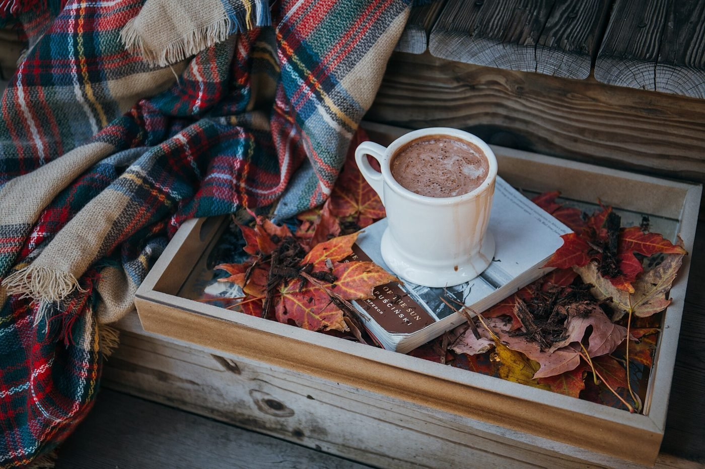
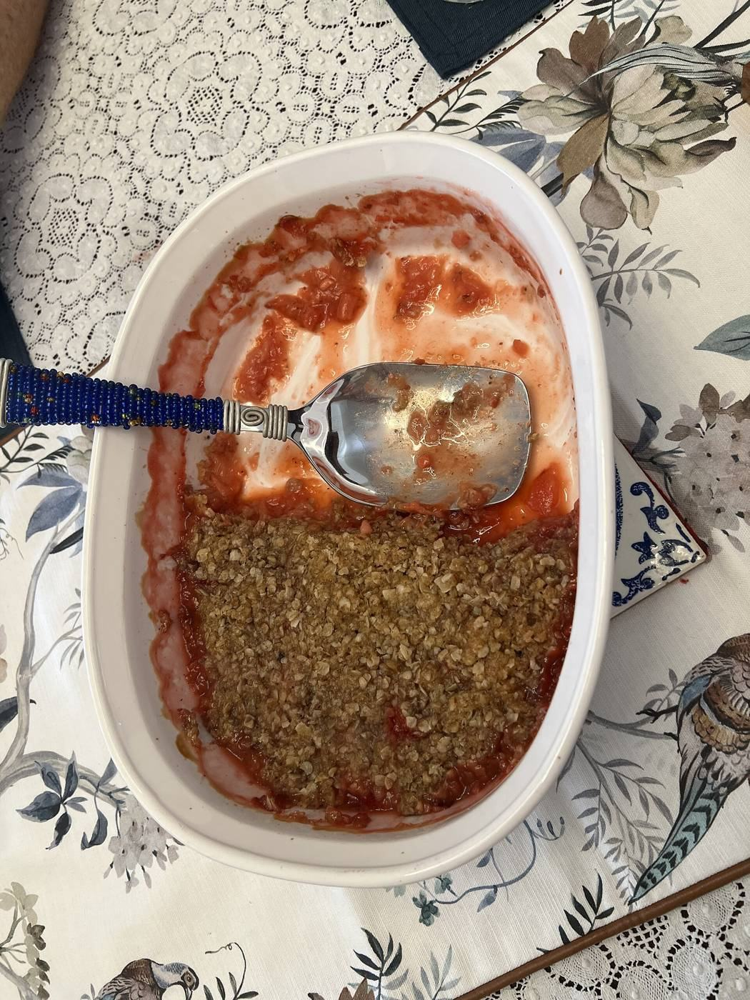
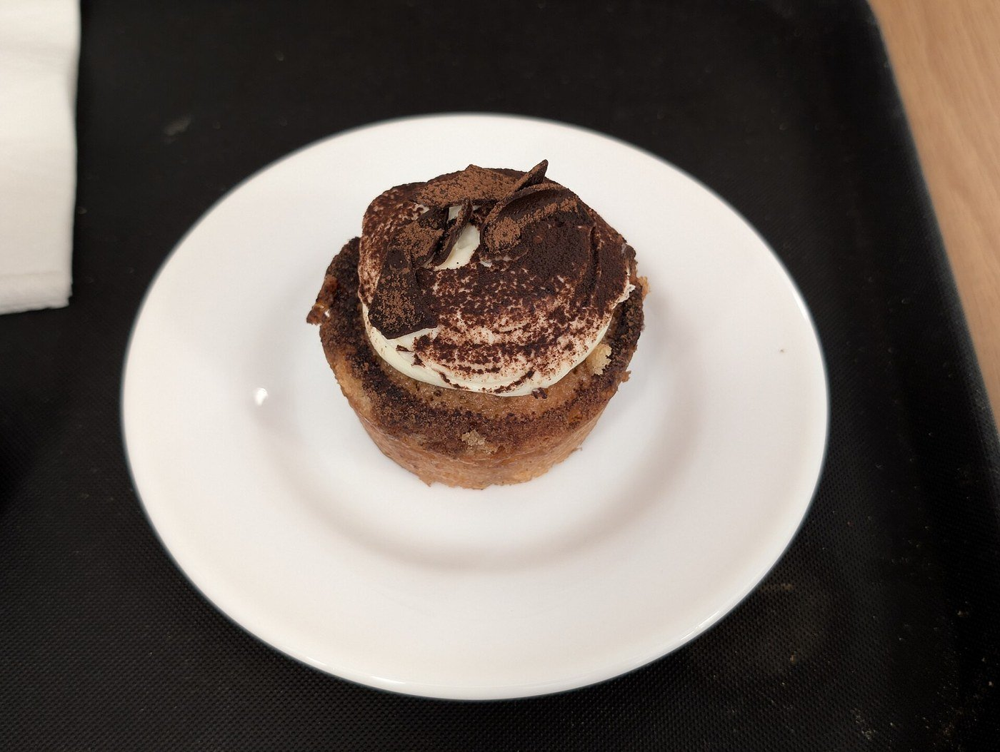
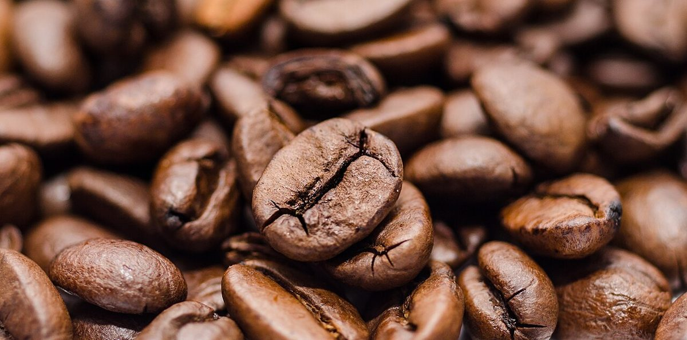

ハンドドリップコーヒー
一杯ずつ丁寧に落とすコーヒー。(写真はイメージ)
価格: 準備中
カフェ / 富良野駅から徒歩2分ほど
富良野の駅のそばで、旅の途中にも、町の毎日にも寄り添うカフェ。「cafe ココカラ」で、ひと息つくところから始めませんか。

ABOUT
cafe ココカラは、北海道富良野市朝日町にあるカフェです。富良野駅から歩いて2分ほどの場所にあります。
Instagramでは、ハンドドリップコーヒー、パフェ、ホットサンド、ハンバーグ、カレーなどの提供や、テイクアウトができることが紹介されています(2022年から運用のアカウント)。
店名の由来はお店の公開情報からは確認できませんでした。このページの「ココから、はじまる一杯。」は、「ココカラ」という響きから制作側が考えたイメージです。


MENU
お店の紹介で確認できた提供内容のイメージです。詳しいメニュー・価格は準備中です。

一杯ずつ丁寧に落とすコーヒー。(写真はイメージ)
価格: 準備中

Instagramのプロフィールにパフェの記載があります。(写真はイメージ)
価格: 準備中

軽いお食事に。(写真はイメージ)
価格: 準備中




VOICE
以下は制作側が作った「イメージ例」であり、実際のお客様の声ではありません。
駅の近くなので、電車を待つ時間に立ち寄りました。コーヒーがゆっくり落とされていて、気持ちが落ち着きました。
旅行で訪れた方(イメージ)ホットサンドとコーヒーで、ちょうどいい昼ごはん。窓の光がやさしくて長居してしまいそう。
近所の方(イメージ)パフェが目当てでしたが、お店の空気もよくて、また来たいと思いました。
友人と訪れた方(イメージ)ACCESS
| 所在地 | 〒076-0026 北海道富良野市朝日町2-2 富良野駅から徒歩2分ほど |
|---|---|
| 電話 | 準備中 |
| 営業時間 | 準備中(Instagramには10:00頃〜18:00頃の記載があります。最新情報はご確認ください) |
| 定休日 | 準備中 |
| SNS | Instagram @cafecocokara2022 |